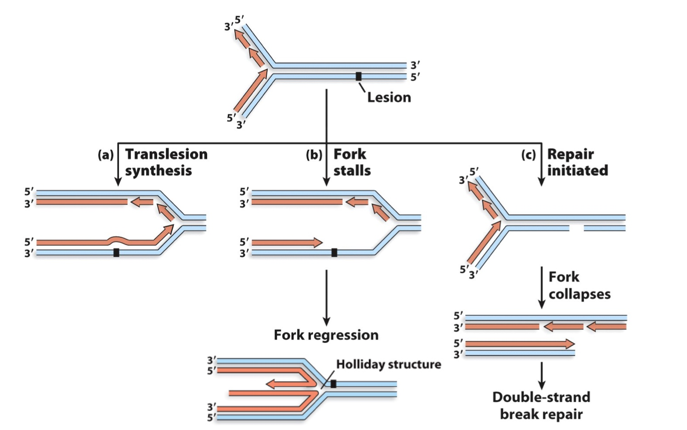
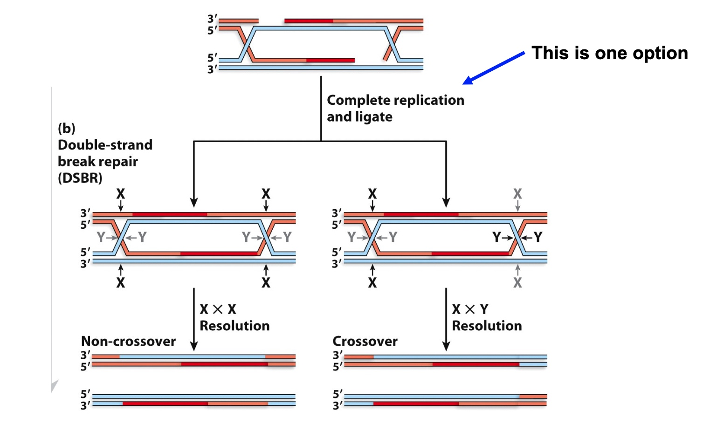

Summary of mechanisms for dealing with DNA damage
1. Base mismatches/ base damage
- Base excision repair removes base damage
- Nucleotide excision repair removes damage that disttorts the helix
- Mismatch repair corrects mispaired bases due to erroneous insertion during DNA replcication
2. Bypass Damage
Y-family DNA polymerase replicate past DNA damage
3. Strand breaks
- Non-homologous end joining repairs
- Homologous recombination repairs
DNA Repair Poem
Two Ways to tolerate DNA damage during replication

Analyzing Real Data: TLS polymerase
fraction number refers to the protein come out first.
In this experiment, molecular wih bigger molecular weight will come out first.
SEC is used primarily for the analysis of large molecules such as proteins or polymers. SEC works by trapping smaller molecules in the pores of the adsorbent.
- Which polymerase has a higher molecular weight, Pol III or UmuC?
- Polymerase III has a higher molecular weight
- Explain the results for the three different fractions at 47C.
- In fraction number 50, there is only polymerase III;
- In fraction number 56, there are both two proteins
- In fraction number 64, there is only UmuC.
- Why is DNA polymerization greater for fraction 56 than for fractions 50 or 64?
DNA Double-Strand Break Repair
DNA double-strand breaks affect both DNA strands and are potentially deadly lesions
Repair of double-strand breaks by non-homologous end joining in eukaryotes (“duct-tape” repair)
It will end up with some changes, which will leads to some mutations. But just like the duct-tape, it at least joint the DNA strand.
Repair of double-strand breaks by homologous recombination (laser surgery repair)
First thing is to get rid of some DNA -- to widen the gap
Using helicase and nucleases.
Because will need the single strand DNA.
Second thing is to form thefirst D-loop
Third thing is to form the second D-loop
4. Strand extension by DNA polymerase
Synthesize new DNA using homologous template.
Holiday Junction
Homologous recombination repair can produce both crossovers and non-crossovers

Non-crossover: Both side cut on XX or YY
Crossover: One cut X and the other cut Y.
Thought Question
Why do you think that non-homologous end joining might be detrimental in cases where there are many collapsed replication forks?
Non-homologous will join DNA strands that are not supposed to join together, without consulting homologous strand.
Proteins that catalyze recombination steps
Initial steps of homologous recombination in bacteria
End processing by the RecBCD helicase/nuclease
Chi sequence will cause protein to change shape.
RecA-mediates strand exchange between complementary DNA molecules
Bacterial RuvAB migrates Holliday junctions during recombination
Bacterial RuvC cleaves Holliday junctions
Cuts more efficiently at specific sequences (this is why branch migration is needed)